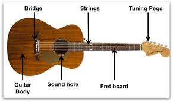

Ethan Gonzalez
About Me
Hi! I'm Ethan Gonzalez from Indio, California. I’m currently studying in the BYU-Pathway WDD program and working on improving my web development skills. I enjoy fitness, trucks, coding, and learning new things every day.
My Interests
Some things I’m passionate about are: working out, reading, web programming, guitar, and improving my digital skills. This course will help me build stronger web development foundations.